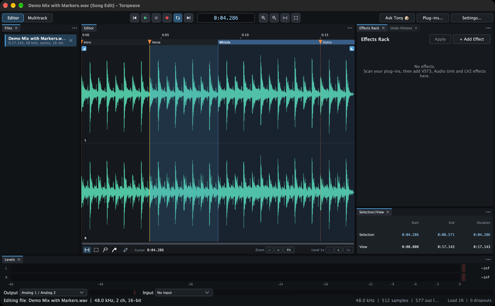
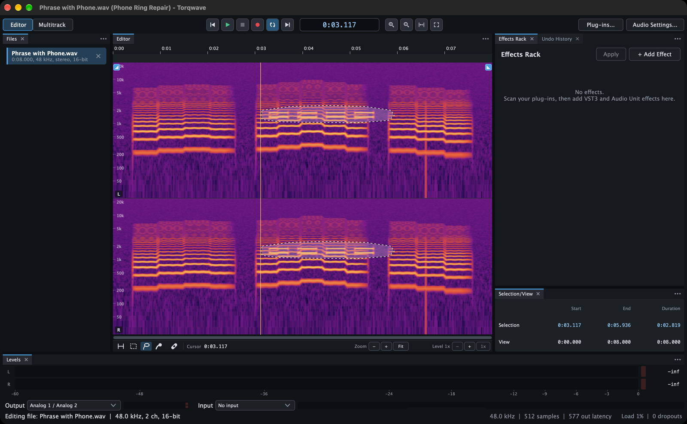
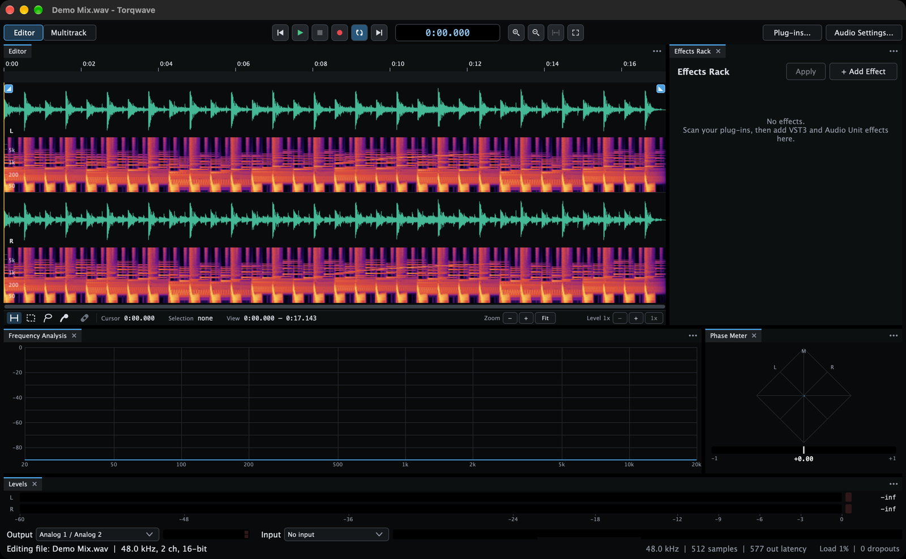
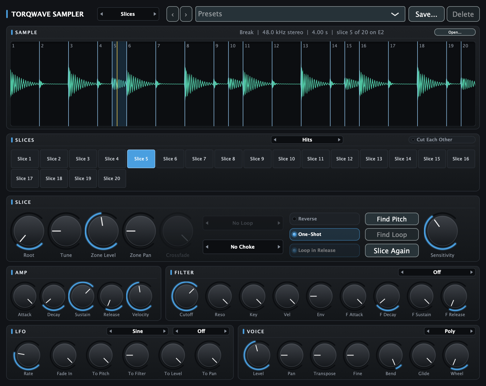
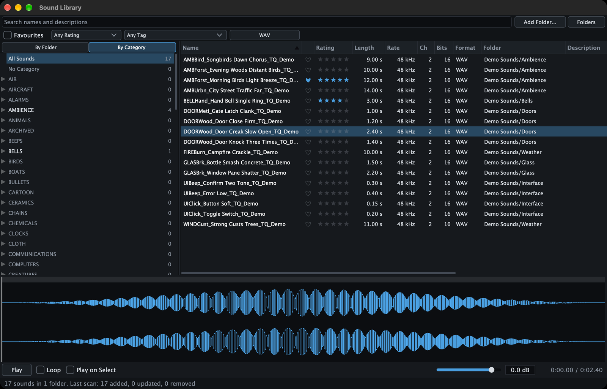
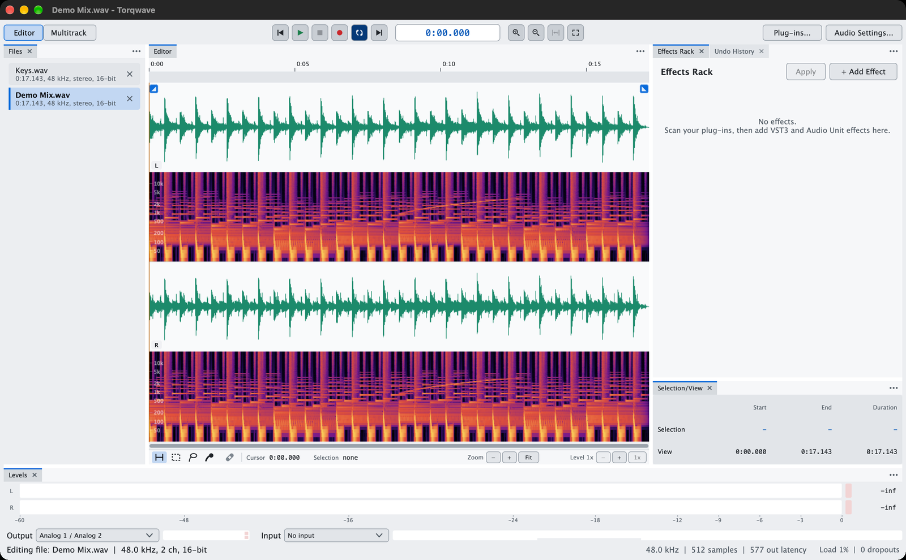
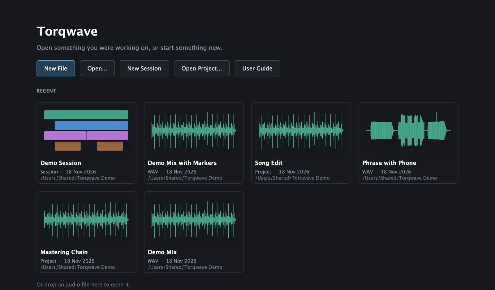

An audio editor and a DAW in one: for sound design, for writing and producing music, and for working to picture.
Free and open source, for macOS, Windows and Linux. Edit a file down to its spectrum, repair and master it, then build a session around it with instruments, a piano roll, automation and video, without leaving the program.
What comes built in, played by Torqwave itself: pads, bells, a choir, a lead and a wall of strings from Torqwave Synth and StringSwarm. Nothing was added after the render.
Eight detuned saws, a slow filter sway, chorus and a long reverb.
Analog saw x4, Analog saw x4. Filter: Ladder 24 at 1.2 kHz. Effects: chorus, reverb. Macros: Cutoff, Grit, Space.
Chosen by ear. Plays four bars at 120 BPM. Joined 0.2 s in.
Growl x4 (Fold warp), Analog saw x3 an octave down, Vowel an octave up. Filter: Ladder 24 at 1.4 kHz. Effects: fold drive, chorus, reverb. Macros: Fold, Glow, Grit, Space.
23 parts in use; no. 1 of 194 in the synth's Pad list. Plays the audition phrase “Minor Progression” at 125 BPM. Joined 0.2 s in.
A metallic bell ringing out under a reverb.
Metal. Filter: SVF High at 200 Hz. Effects: reverb. Macros: Cutoff, Grit, Space.
Chosen by ear. Plays four bars at 120 BPM.
A bright FM pluck with a dotted echo.
FM. Filter: SVF High at 300 Hz. Effects: 1/8 D delay, reverb. Macros: Cutoff, Grit, Space.
Chosen by ear. Plays four bars at 120 BPM.
Pulse (Squeeze warp), Metal, Sync an octave up (Sync warp), a sub. Filters: Ladder 12 at 900 Hz and Comb at 65 Hz. Effects: hard drive, 1/4 D delay, reverb. Macros: Verdict, Squeeze, Ring, Grit.
24 parts in use; no. 20 of 107 in the synth's Cinematic list. Plays the audition phrase “Minor Progression” at 125 BPM.
Vowel x7, Vowel x4 +7 st, Sync two octaves up (Sync warp), digital noise. Filters: SVF Band at 1.6 kHz and SVF High at 250 Hz. Effects: chorus, reverb. Macros: Choir, Radio, Tune, Space.
23 parts in use; no. 40 of 156 in the synth's Texture list. Plays the audition phrase “Two Chords” at 125 BPM. Joined 0.2 s in.
Two pairs of detuned saws beating, under a slow filter sway.
Analog saw x2, Analog saw x2, a sub. Filter: Ladder 24 at 700 Hz. Legato. Macros: Cutoff, Grit, Space.
Chosen by ear. Plays four bars at 120 BPM.
Three saws through the fuzz, a vibrato fading in, and a dotted echo.
Analog saw x3. Filter: Ladder 24 at 2.5 kHz. Legato. Effects: fuzz drive, 1/8 D delay. Macros: Cutoff, Grit, Space.
Chosen by ear. Plays four bars at 120 BPM.
Twelve strings over three octaves of one note, 30 cents apart, four guitars picked 14 times a second through the fuzz.
12 strings, Three Octaves tuning, 4 guitars; Fuzz amp.
Chosen by ear. Plays four bars at 120 BPM.
The first announced release since 0.19.2: built-in instruments worth playing, something to play on them, a start that brings back where you were, and in 0.21.0 itself more drums and three repairs corrected.
Basic Drums has a second, Modern type beside the Classic one for 21 of its sounds, chosen per pad, five kits made of them (Modern, Warehouse, Body Music, Foundry and Broken Beat) and fourteen more factory grooves. The 30 sounds and seven kits there were are unchanged. The new kits were heard as rendered clips before the release; the Modern sounds were not tried in the window by hand.
The Maximizer holds its ceiling on Torqwave's own true-peak meter, Click and Pop Repair finds flat-topped clicks and leaves drum hits alone, and Repair Clipping rebuilds from the sound round the clip. Measured by the tests; not tried by hand.
A start that reopens every file that was open in the editor, in order, each with its selection, cursor, zoom and scroll, and the session with its view where it was. It keeps a note of what was open, not your audio: files come back as they are on disk.
Torqwave Synth with Decrypt, Torqwave Sampler, StringSwarm and Basic Drums, each with its own window, played from the computer's keys, with Audition playing each sound as you choose it.
The Sequence Library ships 1,032 sequences and 116 kits in 37 styles, techno and industrial first, sorted by style, energy and character. They play on the built-in instruments or on your own plug-ins.
For one file at a time, down to the single sound inside it.
Open a file and it shows as a waveform, a spectrogram, or both. Several files stay open at once in the Files panel, each with its own undo history.
In the guide: Editing audio · Projects and file types

A cough, a phone ringing or a squeaky chair shows in the spectrogram as a shape of its own. Select that shape and leave everything else as it was.
In the guide: Spectral editing and repair · Before and after, with numbers: Quality

Built-in effects with previews and presets, a live rack, and your own plug-ins.
In the guide: Effects and the rack

Measure first, hit a target in one step, and finish a master.
In the guide: Loudness and mastering · A loop brought to a loudness, measured: Quality

The DAW half, with the editor's tools reaching into every clip.
In the guide: Multitrack sessions · Recording

A wavetable synth with its own window and 3,743 factory patches in 29 categories, for dark techno, industrial and EBM first.
Hear it: patches from every category · In the guide: Instruments and MIDI

A patch from a recording: drop one note, or a chord, on the synth's Decrypt page and it searches for a patch that plays like it.
In the guide: Decrypt: a patch from a recording, with how long it takes and how near it gets

Your own sounds across the keys, or cut into slices with each piece on a key of its own.


Built in, so a session plays the same on any computer with Torqwave.


For writing music: start from a pattern, a preset or a blank grid.
Hear them: every factory kit · sequences from every style · In the guide: The Sequencer · The Sequence Library · The 37 styles

Working to picture, in stereo, 5.1 or 7.1.
In the guide: Video and surround

For a large sound-effects collection.
In the guide: The Sound Library

A sentence becomes a plan of edits, made by a language model you run yourself.


Hiss, hum and missing highs repaired at the default settings, and a loop brought to a loudness, on clips Torqwave rendered itself; what the tests measure; and what has not been checked.
Patches, presets, kits and sequences from every built-in instrument, most chosen by rule and not by ear, so you hear what the lists are like.
A feature matrix, each cell read from that product's own documentation, showing what Torqwave lacks as plainly as what it has.
Every piece of work with what the tests measured, what was tried by hand and what was not.